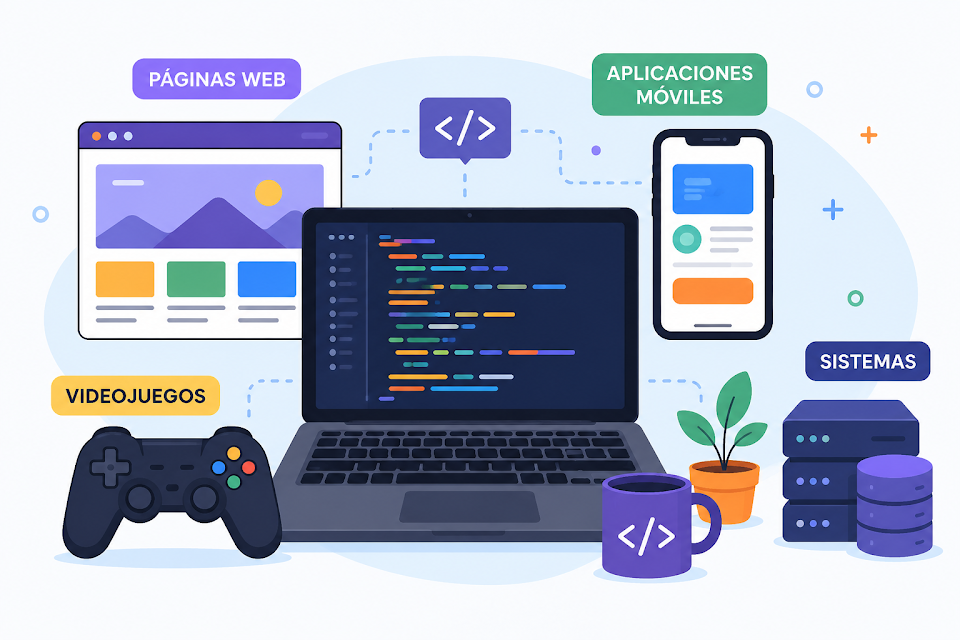

Los lenguajes de programación son herramientas que permiten comunicarnos con una computadora y darle instrucciones para realizar diferentes tareas. Gracias a ellos se pueden crear páginas web, aplicaciones, videojuegos, programas y muchas otras tecnologías que utilizamos todos los días.
Cada lenguaje está pensado para diferentes tipos de proyectos. Algunos se utilizan principalmente para crear páginas web, mientras que otros son más utilizados para desarrollar aplicaciones, trabajar con datos, crear videojuegos o controlar sistemas.
Existen muchos lenguajes de programación, entre ellos Python, Java, JavaScript, C++, PHP y C#. Cada uno tiene características y formas de escribir código diferentes.
Los lenguajes de programación son importantes porque forman parte de gran cantidad de tecnologías actuales. Permiten automatizar tareas, resolver problemas y desarrollar nuevas herramientas.
